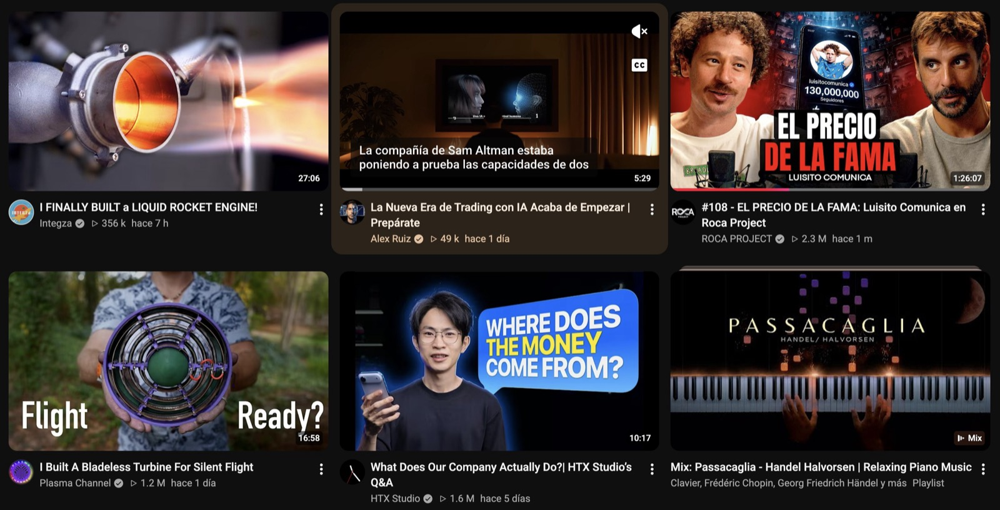
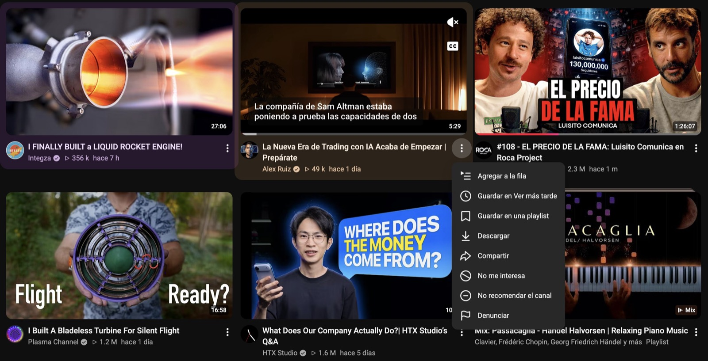
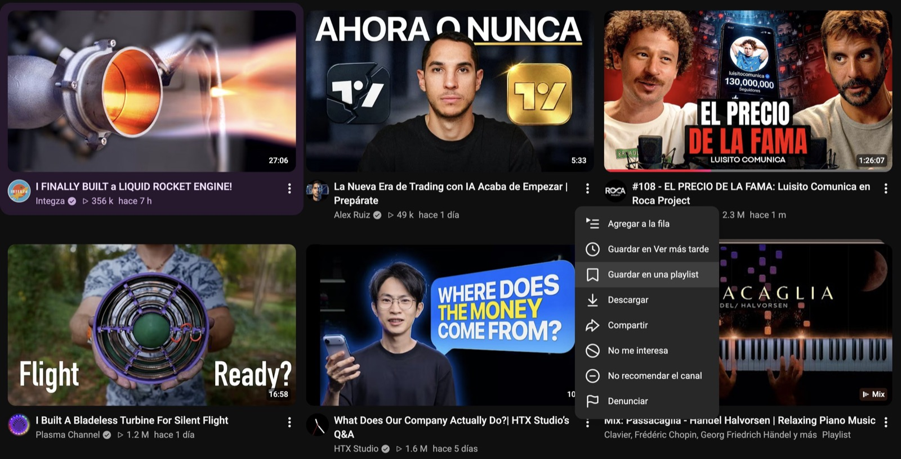
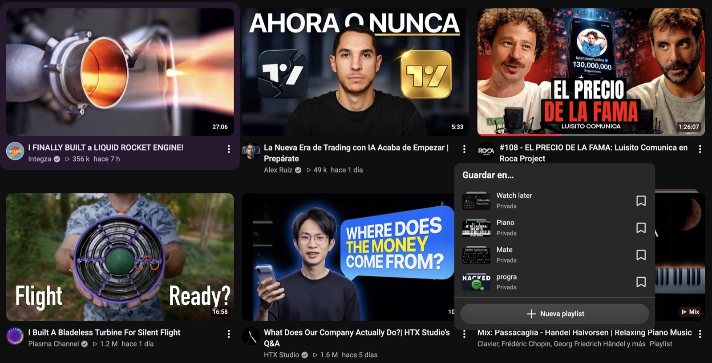
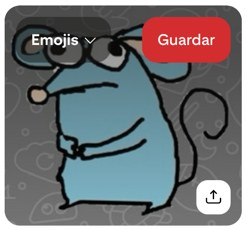
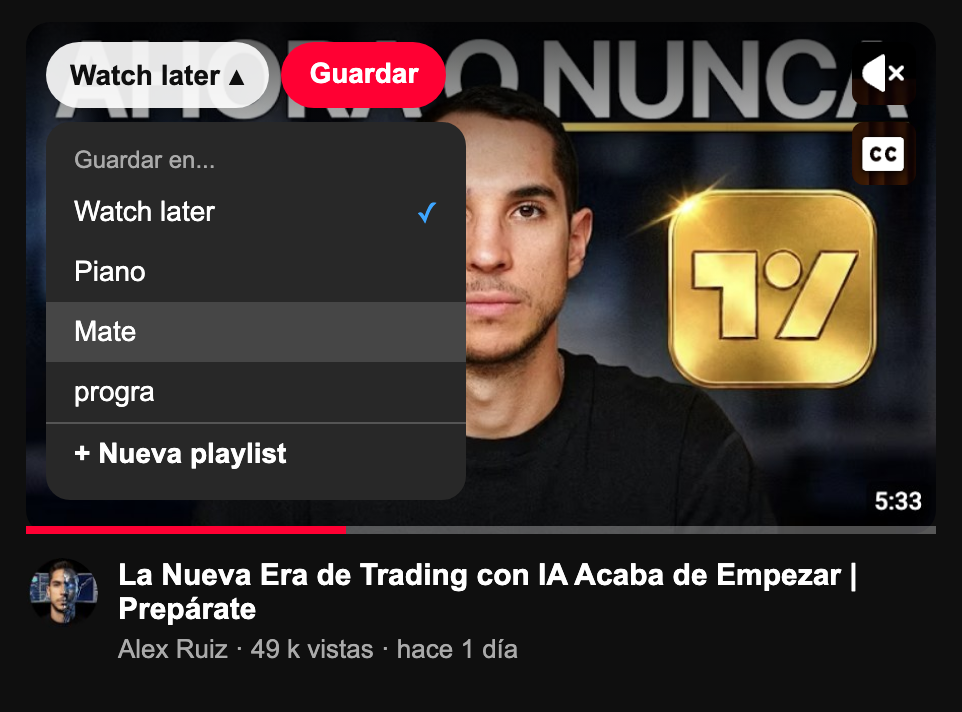
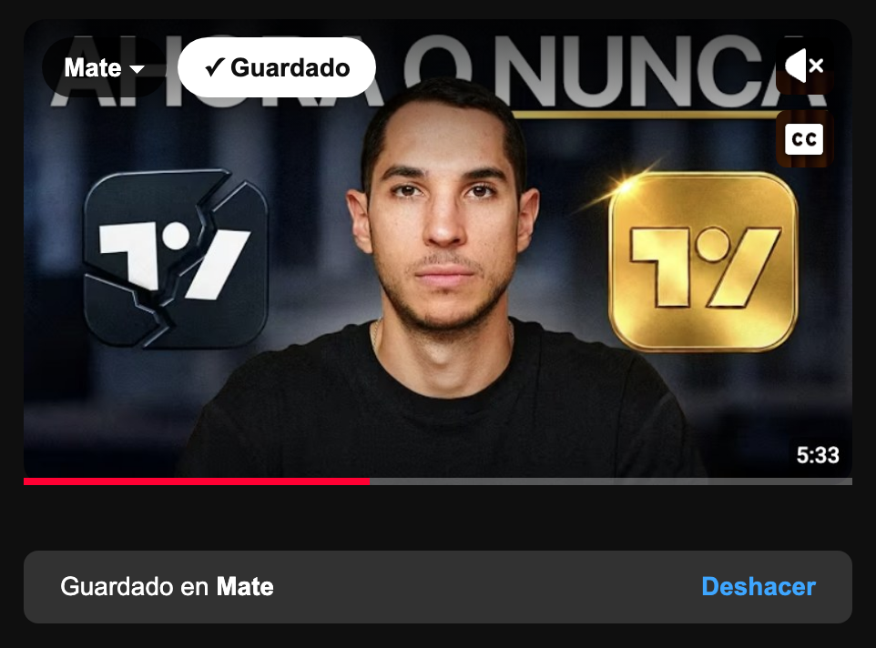
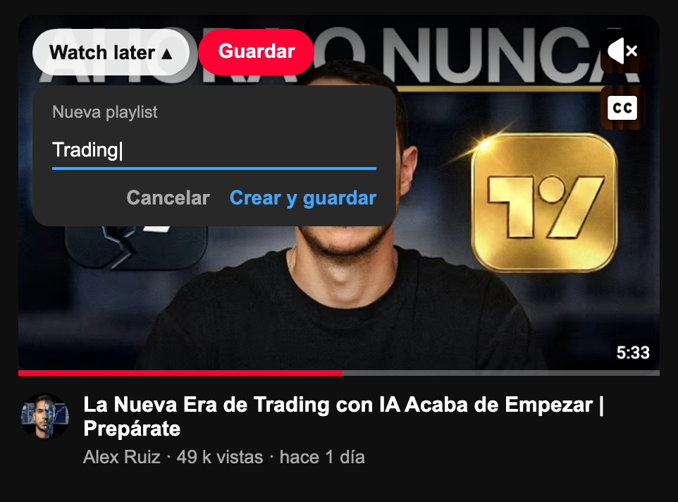
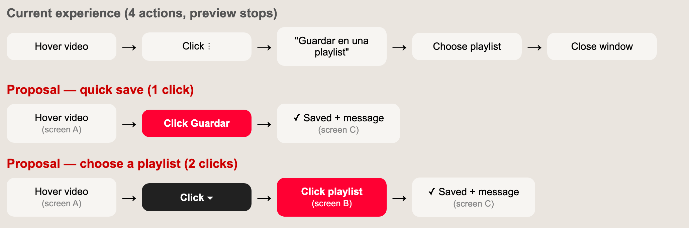
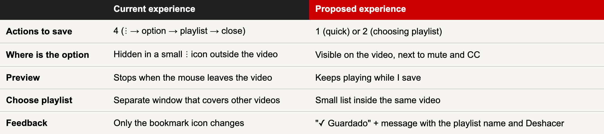

YouTube: saving a video to a playlist from the preview
Subject: Implementación de internet de las cosas
Professor: Rodrigo Sánchez Luna
Student: García Soto Arturo Sebastián
Student ID: A00842192
Due date: November 3, 2026
YouTube (web version, on a laptop).
Saving a video to a playlist (like "Watch later" or my own playlists) directly from the home page, without opening the video.
When I scroll the YouTube home page and put the mouse over a video, the video starts playing as a preview. At that moment only two buttons appear on the video: mute and subtitles (CC).
A lot of times I see a video that looks interesting but I don't have time to watch it right now, so I want to save it to a playlist for later. The problem is that the save option is not in the preview, it is hidden inside the small ⋮ menu under the video.
Home → Hover video → Open ⋮ menu → "Guardar en una playlist" → Choose playlist → Close window

I put the mouse over the video (middle). The preview starts playing and only the mute and CC buttons appear. There is no way to save it from here.

I have to find the small ⋮ icon next to the title. A menu with 8 options opens, on top of other videos.

I click "Guardar en una playlist". Notice that the preview stopped: when the mouse left the video it went back to the thumbnail.

A "Guardar en..." window appears with my playlists (Watch later, Piano, Mate, progra). I click the bookmark icon of one and then click outside to close the window.
4 actions after the hover: open ⋮, click "Guardar en una playlist", choose the playlist and close the window.
No. It is hidden in the ⋮ icon, which is very small, gray and outside the video. A new user would not know it is there.
More or less. The menu mixes saving with "No me interesa" and "Denunciar". Also "Guardar en Ver más tarde" and "Guardar en una playlist" are two separate options for almost the same thing.
When I move the mouse to the ⋮ menu the preview stops, so I lose what I was watching. The menu and the window also cover the videos next to it.
The bookmark icons all look the same, and after saving the only feedback is a small change in the icon. It is easy to not be sure if it saved.
Put the save option inside the preview, next to mute and CC, so I can save while the video is playing.

In Pinterest, when you put the mouse over a pin, a red "Guardar" button appears on top of the image, and next to it a menu with the board name (here "Emojis ▾") to choose where to save it.
You save in one click without opening the pin. I want to bring this same idea to the YouTube preview.
A playlist selector + "Guardar" button inside the preview. The mockups keep the YouTube dark mode and the Spanish labels of my account so they look like the real app.
The preview plays like always, but now at the top left there is the last playlist I used and a red Guardar button. Mute and CC stay in their place.

If I click the arrow, a small list of my playlists opens inside the video. The video keeps playing behind it, and the ✓ shows the current one.

The button changes to "✓ Guardado" and a message at the bottom says where it was saved, with a Deshacer (undo) option in case I made a mistake.

If the playlist doesn't exist, "+ Nueva playlist" lets me type a name and create it and save the video in the same step.

The next time, the selector already shows the last playlist I used, so if I'm saving several videos to the same playlist (for example "Mate" before an exam) each one is only one click.

Saving goes from 4 actions to 1 or 2. Saving for later is something people do a lot, so it should be fast.
The red "Guardar" button is the most important action, so it has the strongest color. The playlist selector is dark and secondary, and mute/CC stay small on the right.
I decide while I am watching the preview, which is exactly the moment I know if I like the video. Nothing covers the other videos.
It uses YouTube's own colors, round buttons and dark mode, and a pattern people already know from Pinterest, so it is easy to learn.
The message says exactly where the video went, and "Deshacer" fixes mistakes in one click, so the user is never unsure.
The selector shows the last playlist used, so saving many videos to the same playlist is one click each time.